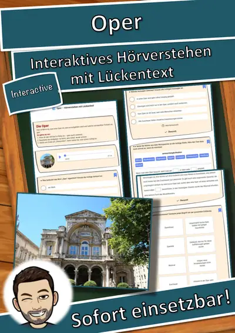

Lesespur: Die Oper: Musik, die Geschichten erzählt – Lesespurgeschichte mit Rätseln (Klasse 7)
Die Oper – Musik, die Geschichten erzählt – Lesespurgeschichte Musik (Klasse 7)Begib dich mit deiner Klasse auf eine spannende Lesespur hinter die Kulissen eines Opernhauses! Livia und Hamid dürfen mit ihrer Klasse dorthin, wo das Publikum sonst nie hinkommt: Im Foyer erfahren sie, wie die Oper um 1600 in Italien entstand und was ein Libretto ist, am Orchestergraben lernen sie Dirigent und Ouvertüre kennen, im Probenraum hören sie eine Arie und unterscheiden Sopran, Alt, Tenor und Bass. Im Chorsaal erleben sie die Kraft vieler Stimmen, in der Maskenbildnerei und der Kostümwerkstatt verwandeln sich Sänger in Könige, auf dem Schnürboden hängen die Kulissen – und im Zuschauersaal öffnet sich schließlich der Vorhang. Ihr Operngucker Gucki ist immer dabei. Am Ende jedes Abschnitts verrät ein Hinweis den nächsten Ort auf dem Plan – nur wer genau liest, findet den Weg und sammelt alle geheimen Buchstaben zum Lösungswort.
Die perfekte Lesespur für den MUSIKUNTERRICHT der 7. Klasse – ideal als Einstieg in das Musiktheater oder zur Vorbereitung eines Opernbesuchs: Sie verbindet sinnentnehmendes Lesen mit Fachbegriffen und einem lebendigen Blick auf die Menschen hinter einer Aufführung. Das Material ist SOFORT EINSETZBAR und in DREI DIFFERENZIERUNGSSTUFEN (leicht ★ / mittel ★★ / schwer ★★★) angelegt.WICHTIG: Das komplette Material ist sowohl in FARBE als auch in SCHWARZ-WEISS enthalten – ideal zum Sparen von Druckkosten.DAS IST ENTHALTEN
- Lesespurgeschichte in 3 Niveaus (leicht, mittel, schwer)
- farbiger Plan des Opernhauses als Suchkarte
- Hörverstehen mit QR-Code zur MP3 (selbstständiges Hören mit Kopfhörern)
- vier Aufträge auf dem Weg: eine Zuordnung, ein Quiz, eine Rechenaufgabe und ein Steckbrief
- Rätselseite (Wörter-Suchsel + Fragen)
- Ausmalbild zum Thema (Opernbühne mit Sängern und Orchestergraben)
- ausführliches Lösungsblatt für die Lehrkraft
- alles zusätzlich als komplette Schwarz-Weiß-VarianteSO GEHT DIE LESESPURDie Jugendlichen lesen ab START, finden im Text den nächsten Ort, suchen ihn auf dem Plan und lesen bei dieser Station weiter. An jeder richtigen Station gibt es einen Buchstaben. Eingebaute Sackgassen (Kantine, Pforte, Lastenaufzug, Garderobe) sind keine Stationen und dienen der Selbstkontrolle. Am Ende werden die gesammelten Buchstaben umgestellt und ergeben ein geheimes Lösungswort. (Die Lösungen sind selbstverständlich nur im Lösungsblatt für die Lehrkraft enthalten.)INHALTLICHER SCHWERPUNKTDie Jugendlichen lernen die Oper als Verbindung von Musik, Gesang, Schauspiel und Bühnenbild kennen, verwenden Fachbegriffe wie Libretto, Ouvertüre, Arie und Rezitativ, unterscheiden die Stimmlagen und erfahren, welche Aufgaben Orchester, Chor, Maske, Kostüm und Bühnentechnik für eine Aufführung übernehmen.ABGEDECKTER LEHRPLAN (Klasse 7, Musik)
- Musik (LehrplanPLUS Bayern) – Jahrgangsstufe 7 „Musik und Bühne / Musiktheater“: die Oper und ihre Gestaltungsmittel kennen, Fachbegriffe anwenden und Aufgaben der Beteiligten beschreiben.
- Deutsch – Lesen und mit Texten umgehen: Sachinformationen gezielt entnehmen; Zuhören: einem Sachhörtext konzentriert folgen (Hörverstehen mit MP3).
- Mathematik – Rechnen mit Zeiteinheiten, Multiplikation.
- Fächerübergreifend / Kompetenzen: Deutsch/Theater (Szene, Rolle), Kunst (Bühnenbild, Kostüm), Berufsorientierung am Theater, genaues Lesen und Prüfen, kreatives Gestalten (Ausmalbild).
Geeignet für Freiarbeit, Stationenlernen, Vertretungsstunden, Wochenplan, Projekttage und Distanzunterricht. Klassenstufe 7.
Ähnliche Materialien

Oper – Hörverstehen mit Lückentext (interaktiv)

Oper Lückentext mit Wortspeicher Hörverstehen und Suchsel

Lesespur: Die Zaubershow: Hinter den Kulissen der Magie – Lesespurgeschichte mit Rätseln (Klasse 5)

Arie Lückentext mit Wortspeicher Hörverstehen und Suchsel

Lesespur: Eine Klanggeschichte: Musik erzählt vom Wald – Lesespurgeschichte mit Rätseln (Klasse 1)

Dirigent Lückentext mit Wortspeicher Hörverstehen und Suchsel

Lesespur: Das Weihnachtsoratorium: Chor, Arie und Rezitativ – Lesespurgeschichte mit Rätseln (Klasse 7)